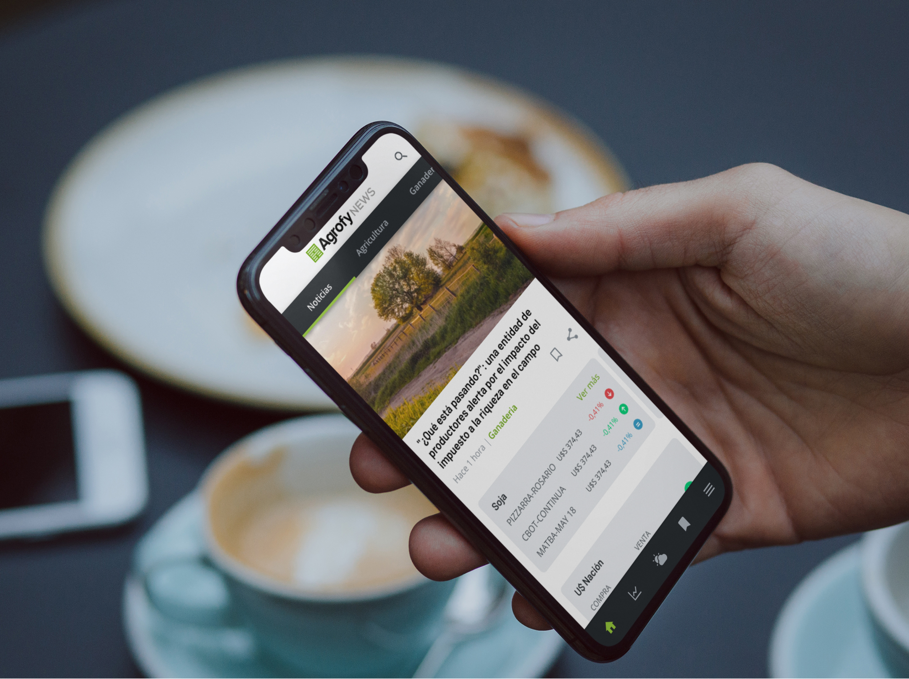

Agrofy News was Agrofy's agricultural content outlet. It had readers, but the relationship ended with the article: nobody logged in, nobody shared, nobody came back for a reason of their own. I designed the full app with a double goal: turn those anonymous readers into a logged-in community, and use content as a natural door into the marketplace.

Agrofy News published news, market data, weather and field updates. It drew readership, but the relationship with each user ran out on every visit: people read and left. There was no login, no reason of their own to return, and the content didn't talk to the rest of the business.
The business goal asked for more than informing. It wanted a logged-in community, with known interests, that shared content and brought in new readers. And it wanted that audience to become the antechamber to the marketplace, where Agrofy sells machinery and supplies.
The web informed well. What was missing was a reason to stay. An app had to offer something the web didn't: identity, recurrence and community.
The plan to take Agrofy News into an app was already on the table, but there was no product. I designed the full application: I understood what the business needed, what people read and which information mattered, and from there I defined how the home had to be built and what gave the user a reason to log in.
I reviewed the existing site's behavior to learn which categories and which articles drew the most reading. That data set the home's priority: hierarchy by real relevance, not by newest.
I talked with users to understand why they came back, what they missed, and what would lead them to log in. Login isn't asked for, it's earned: I needed to know what value justified that step.
I worked with the editorial and business teams to align what Agrofy wanted: a logged-in community, more recurrence and traffic toward the marketplace. Every design decision answered one of those goals.
I analyzed how the best apps in the category handled login, saving, personalization and sharing, to adopt the standards that made sense in the agricultural context.
I ordered the front page by what people actually read, with a clear hierarchy between what mattered and what was secondary. The home stopped being a chronological list and became a curation.
I gave the user concrete reasons to log in: saving articles, personalizing interests and receiving updates. Things the web didn't have, turning loose reading into an experience of their own.
I designed simple sharing flows so content could circulate and bring in new readers. Community doesn't grow on its own: it grows when sharing is easy and natural.
I integrated machinery and supply recommendations inside the content, without interrupting the read. Agrofy News became an entry point to the marketplace: reading an article could end in discovering a product, without ads breaking the experience.
I reorganized articles into clear categories so the app stayed navigable and scalable as content volume grew.
Agrofy News began as the start of a larger project: an agricultural superapp that would bring content, marketplace and services together in one place. The News app was the first step to test that direction.
After analyzing it, the team concluded that taking on a superapp was too complex for the company's moment. The Agrofy News app launched anyway and stayed as a product of its own; the superapp was postponed. Knowing when not to move forward, and why, is also a design and business decision.
The app gave Agrofy News something the web didn't have: logged-in users, with known interests and a reason to return. Reading stopped being a one-off event and became a relationship.
Integrated cross-selling turned content into a discovery channel toward the marketplace, without sacrificing the reading experience. And as the ecosystem's first mobile product, it laid the architecture and content foundations to keep building on.